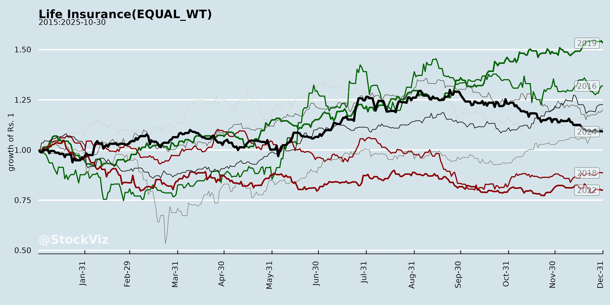
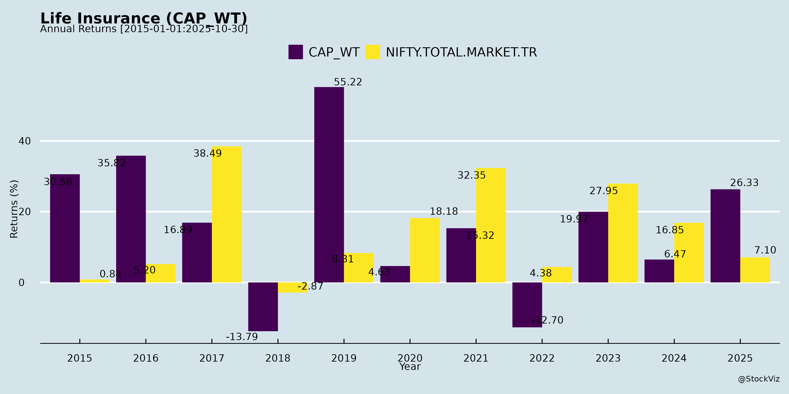
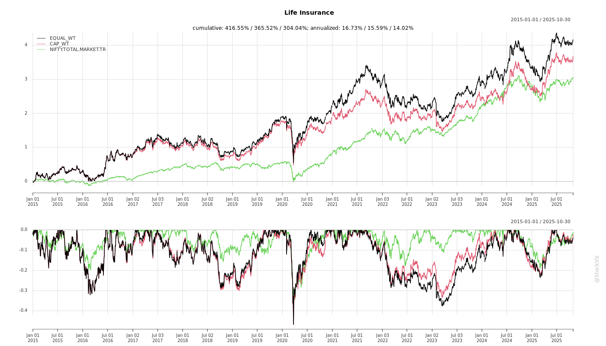
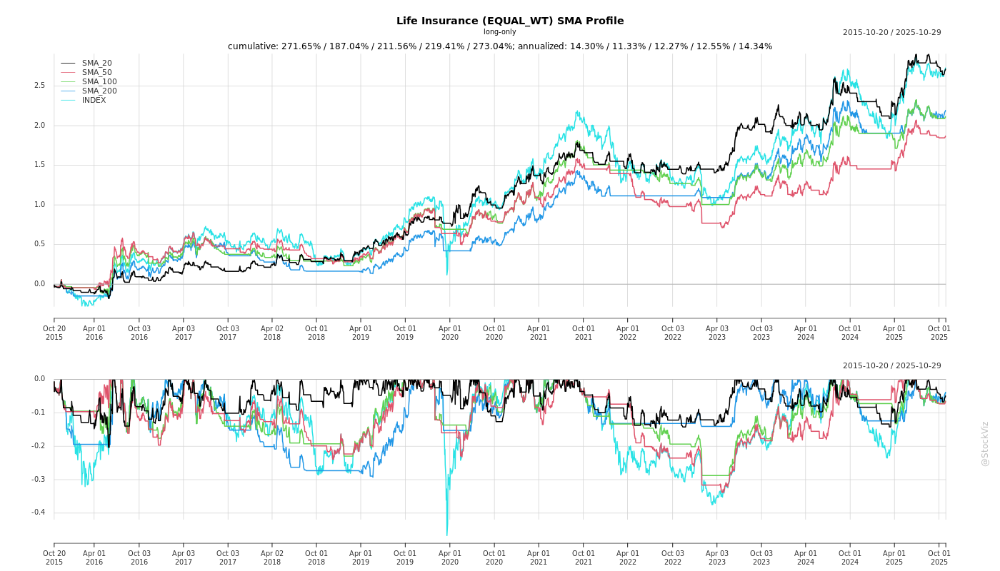
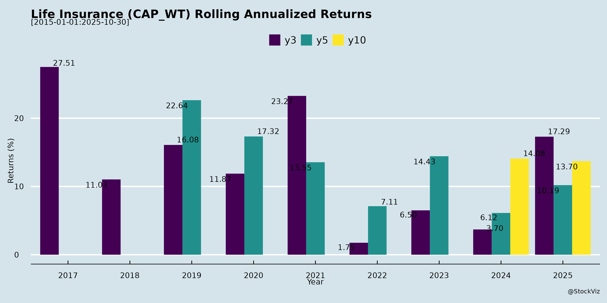

Life Insurance
Industry Metrics
February 20, 2026
Annual Returns


Cumulative Returns and Drawdowns

SMA Scenarios

Current Distance from SMA
Rolling Returns


Market Cap
EBIT (% of Industry Total)
Revenue (% of Industry Total)
AI Summaries
Analyst
asof: 2025-11-29
Summary Analysis of Indian Life Insurance Sector (Based on Provided Disclosures)
The documents primarily consist of SEBI Regulation 30 disclosures from key players (Canara HSBC Life, HDFC Life, ICICI Pru Life, LIC, Max Financial Services/Axis Max Life, SBI Life) regarding investor/analyst meets, conference call recordings, and transcripts (notably Max Financial’s detailed Q2/H1 FY26 earnings call). These highlight robust sector engagement amid strong H1 FY26 performance, but with regulatory headwinds. Below is a structured analysis of headwinds, tailwinds, growth prospects, and key risks.
Headwinds
- GST Input Tax Credit Denial: Major overhang post-Oct 2025 changes. Max Financial estimates 300-350 bps run-rate margin compression (60 bps realized in H1; ~₹268 Cr one-time EV impact). Affects new business (75% of Sep sales) and renewals; higher for ULIP/participating products with renewal commissions. Peers (implied via meets) likely face similar pressures.
- High Base Effect: H2 FY26 growth challenging after strong H1 (e.g., Max: 18% individual adj. FYP YoY vs. industry 2%; 24% 2-yr CAGR).
- Opex Pressures: Policyholder opex/GWP at 15.5% (up 11% YoY at Max); investments in branches/agency expansion (e.g., 150 new branches, agent force to 1.42L) limit short-term leverage.
- Regulatory Scrutiny: Expense management caps; bancassurance cost dynamics (e.g., Axis Bank chairman comments on high costs).
Tailwinds
- GST Rate Cuts: Reduced rates enhance affordability (full pass-through to customers); early traction in protection (post-22 Sep acceleration).
- Balanced Product Mix & Margin Resilience: Max margins expanded to 25.5% (Q2) / 23.3% (H1) from 23.6%/20.2% YoY; VNB +27%. Protection/health (13% sales, +36%), annuities (+85% H1), non-par savings strong; rider attachment 37%.
- Digital & Operational Efficiency: Max highlights app (4L installs, NPS 71-77), AI tools (Ely, Converse Pro reducing headcount 20%), mSpace (90% adoption). Quick GST compliance (15K policies issued seamlessly).
- Customer Metrics: Industry-leading persistency (13M: 83%, 25M: 76%); NPS 57 (up from 52). Grievance rate down to 38.
- Active Investor Engagement: Multiple meets/conferences (e.g., JM Financial, Macquarie, UBS, Avendus, CLSA) signal confidence.
Growth Prospects
- Outperformance vs. Industry: Privates growing 2x industry (Max: 18% H1 adj. FYP vs. private 8%, industry 2%; market share +83 bps to 10.1%). Individual new business sum assured +25% (₹2.16L Cr, #3 rank). Guidance: 15-17% APE growth; 300-500 bps above industry over 5 yrs.
- Channel Expansion: | Channel | Key Highlights | |———|—————| | Proprietary | 46% mix; +22-26% APE (agency +39% 3-yr CAGR; online +68%; NRI 13%). | | Bancassurance | 54% mix; +10% APE; new partners (31 in H1; counter-share >25%). Axis: 7% growth but optimistic H2. | | Group Credit Life | +24% Q2; 40% from Axis. |
- Strategic Bets: Protection leadership (#1 H1 share); annuities (IRIS survey underscores need); GIFT City/SEZ for NRI; 31 new partners. Low penetration (3.8-4.2%) offers huge runway; aim for “breakout #3” player.
- Financials (Max as Proxy): GWP +18% (₹15,490 Cr); EV +15% (₹26,895 Cr); solvency 208%; AUM +9% (₹1.85L Cr). ROEV 16.3%; guidance 24-25% margins, 18-19% future ROEV.
Key Risks
- GST Mitigation Execution: Relies on distributor negotiations, cost tweaks, product mix shifts (60-70% from mix; 30% yield curve). Delays could erode margins/guidance.
- Channel Dependencies: Bancassurance (54% mix) vulnerable to partner priorities (e.g., Axis muted at 7%; counter-share 65-70%). Proprietary investments may delay leverage. | Risk | Mitigation Noted | |——|——————| | Persistency/Claims | High metrics; no aggressive assumptions in EV. | | Investment Volatility | Equity/yield curve offsets; conservative EV modeling. | | Competition/Regulation | Product innovation; below EOM thresholds. | | Macro (Rates, Disbursements) | Tailwinds from yield curve; H2 disbursement cycles. |
Overall Outlook: Sector resilient with strong H1 momentum (growth >> industry), digital/customer tailwinds offsetting GST headwinds. Privates positioned for 15%+ growth, 24-25% margins; long-term penetration upside intact. Max’s confidence (maintaining guidance) likely reflective of peers amid frequent investor interacts. Monitor H2 GST offsets and protection traction.
Financial
asof: 2025-12-01
Analysis of Indian Life Insurance Sector (Based on Q3/H1 FY25 Results of Key Players: LIC, SBI Life, ICICI Pru Life, Canara HSBC Life)
The analysis draws from recent unaudited/audited financial results (Q3 FY25 for most; H1 FY26 for Canara HSBC), highlighting sector trends amid volatile markets, regulatory pressures, and competitive dynamics. Private players (SBI Life, ICICI Pru, Canara HSBC) show robust premium growth, while LIC faces legacy amortization burdens but maintains scale dominance.
Tailwinds (Positive Drivers)
- Premium Growth Momentum: Strong YoY increases across board.
- LIC: Net premium ₹341,858 Cr (9M FY25, +5%); focus on non-par (48% of 9M premiums).
- SBI Life: Net premium ₹60,199 Cr (9M, +9%); FY/renewal up 15%/14%.
- ICICI Pru: Net premium growth ~10-15% in key segments (non-par life dominant).
- Canara HSBC: Net premium ₹391 Cr (H1 FY26, +25% YoY).
- Tailwind from single premium (LIC/SBI: 30-40% mix) and protection/group (SBI/ICICI: 20-30% share).
- Investment Yields: Healthy realized yields (7-9% without unrealized gains).
- Policyholders: 8-9% (LIC/SBI); shareholders: 6-8%.
- Debt-heavy portfolios (govt bonds) buffer equity volatility.
- Solvency Strength: Above 150% (LIC: 202%; SBI: 204%; ICICI: 212%; Canara: 198%) supports growth/product launches.
- Operational Efficiency: EOM ratios stable/improving (12-20%); digital push aids cost control.
- Market Expansion: Annuity/pension/non-par segments surging (LIC: annuity +26%; SBI group life robust).
Headwinds (Challenges)
- Market Volatility: Equity corrections hit unrealized gains (LIC: -6.85% Q3 yield with unrealized; SBI/ICICI: negative in Q3).
- Linked funds volatile (ICICI: -22% Q3 yield).
- Regulatory Amortizations (LIC-specific): ₹464 Cr/quarter family pension; ₹602 Cr excess EOM; ₹456 Cr pension liability—impacts PAT (~₹11K Cr Q3 PAT).
- Persistency Pressure: 13th-month down 2-5% YoY (LIC: 69%; SBI: 69%; ICICI: 66%; Canara: 82% but individual softening).
- NPAs: Mild stress (LIC policyholders: 1.64% gross; shareholders: 1.7%; Canara: 0.1-5.6%).
- Expense Ratios: High (LIC: 13%; SBI: 10%; ICICI: 20%; Canara: 19%) amid agent commissions (15-20% of premiums).
Growth Prospects
- Private Sector Surge: Market share gains (private ~35% premiums); SBI/ICICI/Canara: 10-25% YoY growth vs. LIC’s modest 5%.
- Non-par/protection: 40-50% mix (SBI/ICICI leaders).
- Annuity boom (LIC: ₹10K+ Cr 9M; IRDAI push).
- Penetration Upside: India <5% insurance penetration; urban/rural expansion via bancassurance (Canara/SBI leverage banks).
- Digital/Product Innovation: Health/linked/group growth (SBI: health persistency 83%; ICICI: group life 122%).
- FY26 Outlook: 12-15% sector APE growth (per analysts); tailwinds from rate cuts, infra spend boosting yields.
- Scale for LIC: ₹4.3L Cr assets; 96.5% govt stake aids stability.
Key Risks
| Risk Category | Description | Impact (from Results) |
|---|---|---|
| Investment | Equity/debt volatility; rate sensitivity (yields drop if cuts). | Q3 unrealized losses (LIC/SBI/ICICI); IL&FS NPAs legacy (Canara). |
| Regulatory | IRDAI norms (EOM caps, solvency); amortization burdens. | LIC: ₹20K+ Cr drag over years; product approvals delays. |
| Operational | Lapsing (13M persistency <80%); agent churn. | All: 60-70% long-term cohorts; mis-selling probes. |
| Claims/Actuarial | Pandemic/health inflation; assumption changes. | Actuarial reliance (all audited on appointed actuary certs). |
| Competition | Private vs. LIC; bancassurance dominance. | LIC share erosion (premium growth lags privates). |
| Macro | Slow GDP/inflation; forex (foreign branches minor). | Rural slowdown hits renewal (LIC notes). |
| Liquidity | High single premium reliance; debt servicing. | Stable solvency mitigates; Canara DSCR 16x. |
Overall Summary: Sector resilient with 10%+ premium CAGR potential, driven by privates’ agility and LIC’s scale. Tailwinds from yields/persistency outweigh headwinds (volatility/regs), but risks tilt toward markets/ops. FY26 growth: 12-15%; monitor Q4 equities/persistency for sustained momentum. Private cos (SBI/ICICI) outperform; LIC needs de-risking amortizations.
General
asof: 2025-11-29
Summary Analysis of Indian Life Insurance Sector (Based on Provided Announcements)
Using the four announcements from HDFC Life, ICICI Prudential Life, LIC (largely unreadable/corrupted), and SBI Life as inputs, here’s a structured analysis of tailwinds, headwinds, growth prospects, and key risks for the Indian life insurance sector. Note: LIC’s document provides no substantive information and is excluded from analysis.
Tailwinds (Positive Factors)
- Employee Incentives and Capital Expansion: HDFC Life’s allotment of 7,59,628 equity shares under ESOPs (Nov 12, 2025) reflects strong employee alignment with growth, boosting retention/motivation. Post-allotment paid-up capital rose to ₹21,568 Cr (2.16B shares @ ₹10 FV), signaling financial stability and potential for scaling operations amid sector growth.
Headwinds (Negative Factors)
- Tax and Regulatory Demands: SBI Life received a GST demand order (Nov 26, 2025) from CGST Bhopal for ₹68.77 Cr (₹62.31 Cr tax + ₹6.46 Cr penalty + unquantified interest) covering FY 2018-19 to 2023-24. Issues include GST on ULIP/other charges, ITC non-reversals, and mismatches. Though appealing, this highlights ongoing compliance burdens.
- Divestitures and Subsidiary Dependencies: ICICI Prudential’s sale of 100% stake in its Pension Funds Management arm to ICICI Bank (RBI approval Nov 27, 2025, pending PFRDA nod) reduces diversification, potentially impacting non-core revenue streams.
Growth Prospects
- Moderate; Employee-Driven Momentum: HDFC Life’s ESOP activity suggests internal confidence in expansion, aligning with sector tailwinds like rising insurance penetration (IRDAI targets) and pension fund opportunities. ICICI’s pension stake sale could streamline focus on core life insurance, unlocking capital for growth if proceeds are reinvested.
- Limited Visibility: No direct growth metrics (e.g., premiums, AUM) in docs; prospects hinge on resolving regulatory hurdles for efficiency gains.
Key Risks
| Risk Category | Details | Impact |
|---|---|---|
| Regulatory/Tax Litigation | SBI Life’s ₹68.77 Cr GST demand (appeal planned); multi-year exposure (FY19-24). Sector-wide vulnerability to GST on ULIPs/ITCs. | High financial (cash outflows if lost), operational (distraction), and reputational hit. |
| Approval Dependencies | ICICI’s pension sale needs PFRDA clearance; delays could tie up capital. | Medium; transaction risk in M&A/divestitures. |
| Compliance & Scrutiny | Repeated notices signal intensifying GST/IRDAI oversight on financial products. | Escalation to broader audits/penalties. |
| Capital Dilution | ESOP allotments (HDFC) mildly dilute equity but are minor (0.035% of shares). | Low immediate, but cumulative in talent wars. |
Overall Sector Outlook: Neutral-short term pressure from tax/regulatory noise (SBI/ICICI), offset by operational positives (HDFC). Growth intact via penetration/pension push, but monitor appeals/outcomes. No major systemic red flags; individual company actions dominate.
Investor
asof: 2025-11-29
Indian Life Insurance Sector Analysis
Based on the provided disclosures (investor/analyst meet schedules, conference call recordings, and Max Financial Services Q2/H1 FY26 earnings transcript), the sector shows robust momentum amid regulatory shifts. Key insights are drawn primarily from Max FS (Axis Max Life), with corroborative context from peers like HDFC Life, ICICI Pru, Canara HSBC, SBI Life, and LIC. Analysis covers FY26 H1 performance (ended Sep 2025).
Tailwinds
- Premium Growth & Market Share Gains: Individual Adjusted First Year Premium (FYP) grew 18% YoY (vs. private sector 8%, industry 2%); 2-year CAGR 24% (vs. private 16%, industry 11%). Protection/health up 36%, annuities 85% H1. Retail protection market share leadership.
- Margin Expansion: VNB margins improved to 25.5% (Q2) / 23.3% (H1) from 23.6%/20.2% YoY, driven by balanced mix (protection 13%, non-par savings 28%, annuities 8%). VNB grew 27% despite headwinds.
- Distribution Strength: Proprietary channels +22% APE (Q2); agency force doubled to 1.42L; 31 new partners added H1. Partnerships (54% mix) scaling with >25% counter-share in new banks. NRI 13% of sales; GIFT City office approved.
- Customer & Digital Metrics: 13M persistency 83% (industry-leading); NPS 57 (up from 52). Digital app 4L+ installs; AI tools (e.g., cross-sell engine, underwriting) enabling 30% doc-free term sales; 90% mSpace adoption.
- Regulatory Affordability Boost: GST slab cuts passed fully to customers, spurring protection demand (post-Sep 22 traction up).
- Active Investor Engagement: Multiple group meets/conferences (e.g., JM Financial, Macquarie, UBS, Avendus) signal confidence.
Headwinds
- GST Input Tax Credit (ITC) Denial: ~300-350 bps run-rate margin hit (60 bps H1 realized; ₹268Cr EV impact). Affects 75% Sep sales; renewal commissions amplify due to high retail/traditional mix. Peers (implied) report 40-50 bps—Max’s higher due to superior persistency/conservation.
- Opex Pressure: Policyholder opex/GWP at 15.5% (up 11% YoY, but ratio improving on 18% GWP growth). Investments in branches/agency temper leverage.
- Channel-Specific Challenges: Axis Bank (key partner) muted at 7% growth (H1); focus on mix correction (ULIP down to 50%). H2 base tougher.
- Macro/Regulatory: Yield curve movements offset equity gains (negative non-op variance); solvency strong (208%) but sub-debt raises needed.
Growth Prospects
- Outperformance Guidance Maintained: 15-17% APE growth (on track); margins 24-25% FY26 (post-GST offset via distributor negotiations, cost tweaks, mix). Aim: 300-500 bps above industry; breakout #3 player.
- Product Tailwinds: Protection (34% growth, 37% rider attach vs. 45% prior); annuities (122% Q2); group credit life 24% Q2. Non-par/ULIP balanced; retirement awareness (IRIS survey: index 48/100).
- Strategic Expansion: Digital-led (68% 3Y CAGR online); multichannel (proprietary 46%); new segments (NRI/SEZ, GIFT City). Industry penetration <5% offers runway; protection/underpenetrated longevity key.
- Peer Activity: Similar meets suggest sector-wide momentum; LIC/HDFC/ICICI/SBI/Canara HSBC uploading presentations/transcripts, indicating transparency/guidance stability.
Key Risks
- GST Mitigation Execution: Distributor renegotiations/vendor cuts unproven (2-3 months timeline); failure could erode 24-25% margin guidance (grossed-up potential 28% absent GST).
- Distribution Dependency: Partnership reliance (54%); Axis counter-share stable (65-70%) but growth lag risks. Proprietary investments (150 branches) delay leverage.
- Interest Rate/Volatility: ROEV 16.3% (target 18-19% medium-term); unwind sensitivity. EV ₹26,895Cr (+15% YoY) vulnerable.
- Competitive/Regulatory: Expense caps; bancassurance shifts (e.g., Redeye comments on costs). Persistency/grievance trends strong but claims/morbidity upside.
- Macro: Base effects H2; global dynamics. Conservative EV assumptions (no persistency gains) prudent but limits upside.
Overall Summary: Sector resilient with 2Y outperformance (24% vs. industry 11%), fueled by digital/product innovation and protection/annuity shifts. GST ITC (~300 bps hit) is primary near-term drag, but offset confidence high via mix (60-70% contribution) and efficiencies. Growth >industry (15%+ guided) viable on underpenetration; risks tilted to execution/regulatory. Bullish medium-term (3-5Y: 15%+ CAGR potential), with Max FS exemplifying leadership.
Meeting
asof: 2025-11-29
Summary Analysis of Indian Life Insurance Sector (Based on Q2/H1 FY26 Results)
The analysis draws from unaudited/audited financial results of key players: Canara HSBC Life (new IPO), HDFC Life, LIC (standalone/consolidated), and SBI Life. ICICI Pru and Max Financial filings are non-financial (postal ballots). Sector shows robust premium growth amid market volatility, with strong balance sheets but investment headwinds.
Tailwinds (Positive Factors)
- Premium Momentum: YoY growth across board: | Company | H1 Net Premium Growth (YoY) | Key Drivers | |———|——————————|————-| | Canara HSBC | +25% (₹391 Cr) | FY + Renewal + Single up 14-29% | | HDFC Life | +14% (₹3,324 Cr) | Individual APE +13%, protection/single premium surge | | LIC | +5% (₹2,456 Cr) | Renewal dominant (51%), scale advantage | | SBI Life | +19% (₹4,203 Cr) | FY +24%, single +24% |
- Protection, annuity, and ULIP segments gaining traction (e.g., HDFC/SBI: group life annuity up 20-30%).
- High Solvency: All >190% (LIC 213%, HDFC/SBI ~195%, Canara 198%) – buffers capital needs.
- Persistency Improvement: 13th month premiums 80-85% (up 1-3% YoY); conservation ratios 85-90% for key segments.
- Shareholder Value: PAT growth (LIC +16%, SBI +4%, HDFC +9%); dividends maintained (e.g., SBI ₹2.7/sh).
- Investment Yields: Stable ~7-9% (without unrealised gains); debt-heavy portfolios resilient.
Headwinds (Challenges)
- Investment Volatility: Sharp Q2 drops in inv. income (SBI -ve ₹2,055 Cr, HDFC ₹141 Cr low); unrealised losses from equity mkt correction (yields with gains: HDFC -5.6%, SBI -9.5%).
- Actuarial Pressures: High liability changes (LIC/SBI ~₹2,000 Cr Q2) strain surplus; LIC amortising ₹9K Cr pension liability.
- Expense Ratios: 10-12% (up YoY in some); commission/opex up with growth.
- Low NPAs but Provisions: Gross NPAs ~0.1-1.7%; provisions for diminution (e.g., LIC ₹631 Cr reversal).
- Scale Disparity: Private players (HDFC/SBI) growing faster (15-20%) vs. LIC (5%), but LIC dominates ~50% mkt share.
Growth Prospects
- High Teens Growth: Sector APE/VNB likely 15-20% FY26; private cos targeting 20%+ (HDFC 13% Q2, SBI strong protection).
- Product Mix Shift: Annuity/protection ~30-40% of new biz (up from 20%); ULIP revival (SBI/HDFC 20-30% growth).
- Channels: Bancassurance/digital driving (SBI/HDFC 50%+ sales); partnerships (e.g., SBI Bank).
- Expansion: Rural/underserved mkt penetration; IRDAI reforms aiding product flexibility.
- VNB Margins: 20-25% (stable/improving); LIC new biz strain easing.
Key Risks
- Market/Equity Risk: 20-30% portfolio equity exposure; rate volatility (yields sensitive to 50bps change: EV -5-10%).
- Regulatory: IRDAI caps (EOM 30-35%), solvency norms; potential pension/product tweaks (LIC exposed).
- Persistency/Mortality: Lapse risk (13th month 80%+); post-Covid claims (health up).
- Competition: 25+ players; pricing wars eroding margins.
- Operational: Cyber/data breaches; talent retention (ESOP grants noted).
- Macro: Inflation/rates (CRNP sensitivity: +10bps yield boosts EV 2-3%); slowdown impacting premiums.
Overall Outlook: Bullish (15-20% sector growth FY26), driven by premiums/channels, but monitor mkt volatility. Private cos agile; LIC scale-focused turnaround. Embedded Value strong (SBI ₹7.6L Cr).
Press Release
asof: 2025-11-29
Summary Analysis of Indian Life Insurance Sector (H1 FY26 Insights from Key Players: Canara HSBC, LIC, Axis Max Life, SBI Life)
The sector demonstrated robust H1 FY26 performance amid post-listing milestones (Canara HSBC, LIC) and diversification efforts. Aggregate trends: Total Premium growth (5-25% YoY across peers), VNB/margins expansion (12-27% YoY), AUM up 3-11%, PAT +4-16%. Private players (SBI Life, Axis Max) outpaced LIC in individual metrics, with market share gains. GST exemption emerged as a pivotal positive. Below is a structured analysis of headwinds, tailwinds, growth prospects, and key risks.
Tailwinds (Positive Drivers)
- GST Exemption on Individual Premiums: Universally cited (LIC, Canara HSBC, SBI Life CEOs) as boosting affordability, penetration, and first-time buyers; expected to accelerate industry growth.
- Product/Channel Diversification: Shift to high-margin Non-Par (LIC: 36% APE share, +30% YoY; SBI: Non-Par/ULIP mix), protection (SBI: +29% NBP), annuities. Multi-channel (banca 50-60%, agency 29-31%, others rising 14-43%).
- VNB/Margin Expansion: Strong profitability (Canara HSBC: 20.6% YoY, 19.6% margin; Axis Max: 27% YoY, 23.3% margin; SBI: 14% YoY, 27.8%; LIC: 12.3% YoY, +140 bps to 17.6%).
- Digital & Operational Efficiency: High digital adoption (SBI: 99.6% proposals; RPA/automation across peers); expense ratios stable/improving (LIC: -146 bps to 11.28%; Canara: 19%).
- Bancassurance Strength: Core for most (SBI/Canara: 57%; Axis Max scaling partnerships).
Headwinds (Challenges)
- Volume Declines in Individual Segment: LIC saw Individual NBP -3.5%, policies -21%; peers moderated via single/renewal growth (SBI renewal +21%).
- Persistency Pressure: Mixed (LIC: 13M premium 75.3% vs. 77.6%; SBI improved +70 bps to 87.1%; Canara stable ~84%).
- Single Premium Volatility: Growth reliant on it (SBI: +24%), exposing to regulatory/tax shifts.
- Solvency & EV Fluctuations: LIC solvency up to 2.13 but EV -1%; peers strong (SBI 1.94, Axis 208%).
- Macro/Regulatory Hangover: Past impacts (surrender regs, tax changes) linger; competition intensifying private share erosion for LIC (59% overall but 37% individual).
Growth Prospects
- Underpenetrated Market: Low penetration (3-4% GDP); young demographics (median age 28), rising affluence; Swiss Re forecasts 9% real premium CAGR to 2032 (SBI deck). India to become 5th largest globally.
- Annuity/Protection Boom: Aging population, NPS growth; peers scaling (SBI annuity +29%, group savings +54%).
- Private Peers Scaling: Market share gains (Axis Max: +83 bps to 10.1%; SBI private leadership 22.6% IRP); RoEV 16-17%.
- Digital/Multi-Channel Tail: Rural push, 100% digital onboarding; bancassurance + agency revival.
- AUM/Investment Leverage: 3-11% YoY growth; high solvency buffers expansion.
Key Risks
- Regulatory/Tax Changes: GST benefits offset by potential reversals; sensitivity to lapse/mortality (+10% lapse: VoNB -4.6% to -8.5%; SBI analysis).
- Persistency & Lapses: Critical for VNB; mass lapses post-penalty period (SBI: VoNB -18.4% at 50% scenario).
- Investment/Market Volatility: Equity sensitivity (SBI: -0.5% VoNB at -10% equities); interest rate shifts (±100 bps: IEV ±3-4%).
- Expense/Mortality Shock: +10% expenses/mortality: VoNB -1.8%/-6.1%; competition eroding margins.
- Economic/Demographic: Slowdown impacts renewal (+6-28% now but vulnerable); cyber/data risks (peers emphasize ISO certifications).
Overall Outlook: Strong tailwinds from GST/digitalization outweigh headwinds; sector poised for 10-15%+ growth FY26+, led by privates. Monitor persistency/regulations for sustained VNB trajectory. (Data as of Oct-Nov 2025 releases.)
Copyright © 2023 SAS Data Analytics Pvt. Ltd. All rights reserved.